iPhone · Android · Apple TV · Watch · Car
Every server you run.
One library.
Alexandria is the client for the media you already host. Audiobooks, ebooks, comics, music, film and TV from Audiobookshelf, Plex, Jellyfin, Kavita, Komga, Calibre, Navidrome and more — one Home, one queue, one Now Playing, on every screen you own.
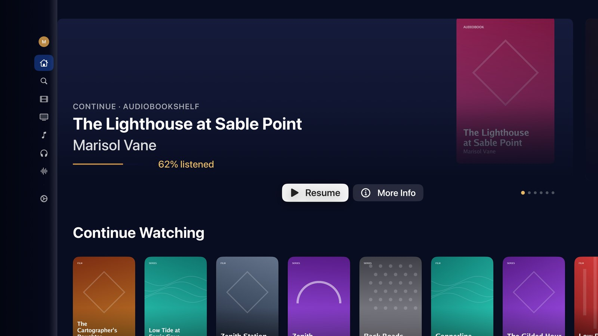

Version 3.1.0
Party Play, Alexandria for Apple TV, three more services, and recommendations built from your own library.
Party Play
One clock for every room. Start a party from your phone and every Apple TV and speaker in the house lands on the same beat — scheduled starts, per-device sync, leader handover.
Alexandria for Apple TV
A real tvOS app: profiles with PINs, a sidebar built for the remote, films and TV with scrub previews, music, audiobooks, and the same servers as your phone.
Three new services
Navidrome (and Gonic, Airsonic and other Subsonic servers), Custom OPDS for any 1.2 or 2.0 catalog, and Stump as a full integration with reading position synced back.
Discover — For You
Shelves on every service built from what you actually play. Every suggestion says why. Nothing leaves your devices.
Radio from your own library
Eagles Radio, Rock Radio, 1970s Radio — stations made from the music on your servers. Endless, and it behaves like radio, not shuffle.
Read-Along that lines itself up
Opens already in sync — it listens, finds the place in the book and sets itself. Keeps correcting as you read. Paper, Sepia and Slate themes.
What arrived in Version 3.0.0
Jellyfin, complete
Playlists, a music-style home, artist pages, quality selector, Chromecast, CarPlay and Android Auto — and Jellyfin Video with collections, Continue Watching, resume, subtitles and audio tracks.
Grimmory
BookLore has been succeeded by Grimmory, and Alexandria fully supports it. Existing BookLore connections keep working unchanged.
True hi-res audio
Bit-perfect lossless FLAC streaming for Plex and Jellyfin, full 24-bit support, powered by the mpv audio engine.
Offline, for real
Every Downloads section redesigned: series-grouped grids, cover art and summaries with zero network. Offline no longer dead-ends on error screens.
Your whole library
Hidden list caps removed across every service — huge Komga series, 500+ item Jellyfin and Calibre libraries, every Kavita reading list.
What it does
Built for people who host their own.
Each server keeps its own strengths. Alexandria puts them on one screen, remembers where you were everywhere, and plays it back the way the format deserves.
One Home for everything
A Continue row that mixes the audiobook you fell asleep to, the album you were on and the episode you paused — whichever server they live on. Flip to a single server with the pill, or keep it all together.
- Continue, For You, new arrivals and unfinished series across every connection
- Streaks, goals and short listens that fit the time you have
- Hold the server pill to jump to the next server; tap it to pick
- Home, Library, Search and You — four tabs, under your thumb

Audiobooks, done properly
Chapters, bookmarks, a sleep timer that works with the phone locked, speed, and progress that syncs back to Audiobookshelf the moment you pause. The lock screen, CarPlay and your watch all show the same book.
- Accurate seeking even in VBR MP3s
- Read-Along: the ebook scrolls with the narration and corrects itself as you go
- Audiobook ↔ ebook linking across services
- Reading plans, reminders and upcoming releases

Music that keeps going
Plex, Jellyfin and Navidrome as one music collection: bit-perfect FLAC, synced lyrics, and when an album ends the library keeps playing in the same vibe. Premium mixes every music server in one queue — in the car too.
- Radio stations built from your own library, endless and never the same song twice in a row
- Server-first recommendations, with an online lookup only as a fallback
- Hi-res 24-bit streaming on the mpv engine
- Chromecast, AirPlay, CarPlay and Android Auto

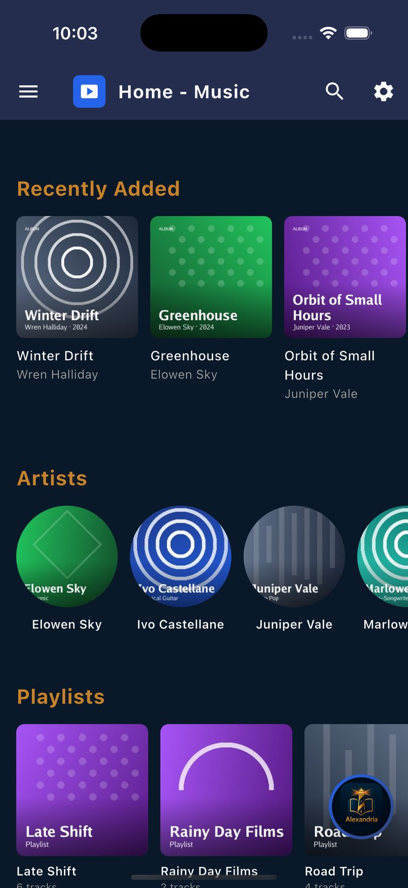
Film and TV, with your subtitles
Movies and shows from Jellyfin and Plex with collections, Next Up and Continue Watching. Pick the subtitle and audio track, set the quality, cast it to the TV — or open the Apple TV app and carry on from the same place.
- Resume anywhere; progress goes back to the server
- Subtitle and audio track selection, a sleep timer for shows
- Skip Intro from the server's markers
- Offline video downloads are on the roadmap
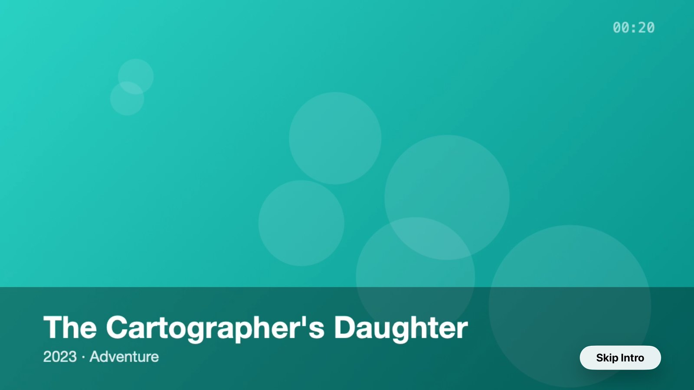
Your whole library, searchable
No hidden caps. Huge Komga series, 500-item Jellyfin libraries, every Kavita reading list — all of it, grouped by series, and one search box that asks every server at once. The index works offline too.
- One media index of everything you own, across services
- Smart collections and series grouping
- Goodreads and StoryGraph import
- Duplicate reporting with the companion server
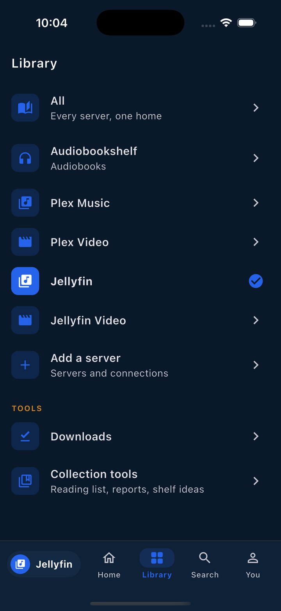

Statistics you can trust
Listening, reading and watching tracked as their own categories — no music inflating your audiobook hours — with per-source breakdowns, goals, streaks and a year in review.
- Goals and reading plans with reminders
- Per-service history and year-end cards
- Stats stay on your devices, or on your own companion server


Offline, for real
Background downloads, whole series in one tap, and Downloads sections that open with zero network.
CarPlay & Android Auto
Every service in the car, with the live queue, source labels and resume. Premium takes the mixed queue along.
Apple Watch & Wear OS
Browse and play from the wrist, offline downloads on the watch, playback that keeps going when the screen sleeps.
Cast anywhere
Chromecast and AirPlay, including AirPlay 2 multi-room on iPhone.
Sign in your way
Passwords, API keys, OIDC and SSO across compatible services. Several servers per service, each remembered.
Widgets, Siri, Spotlight
Home-screen widgets, Live Activities, Siri shortcuts and Spotlight results for your own library.
New
Alexandria for Apple TV
The same servers, on the biggest screen in the house. Profiles for everyone on the couch, a sidebar built for the remote, and a player that respects the film.
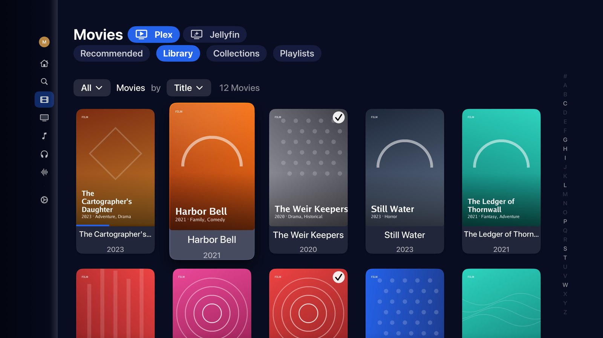

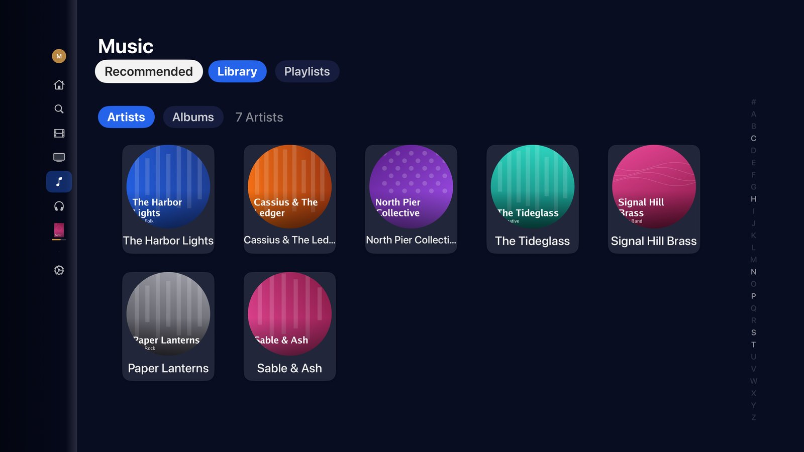
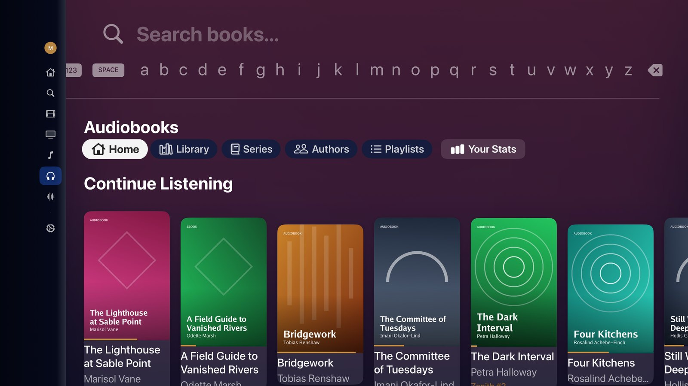
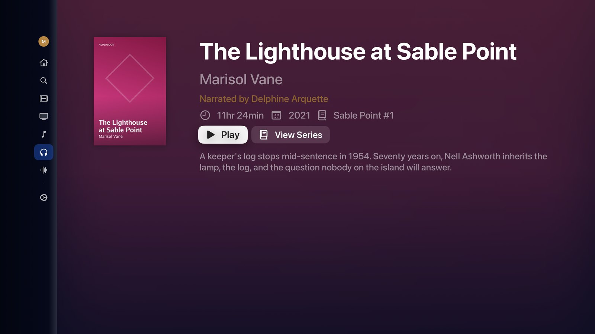
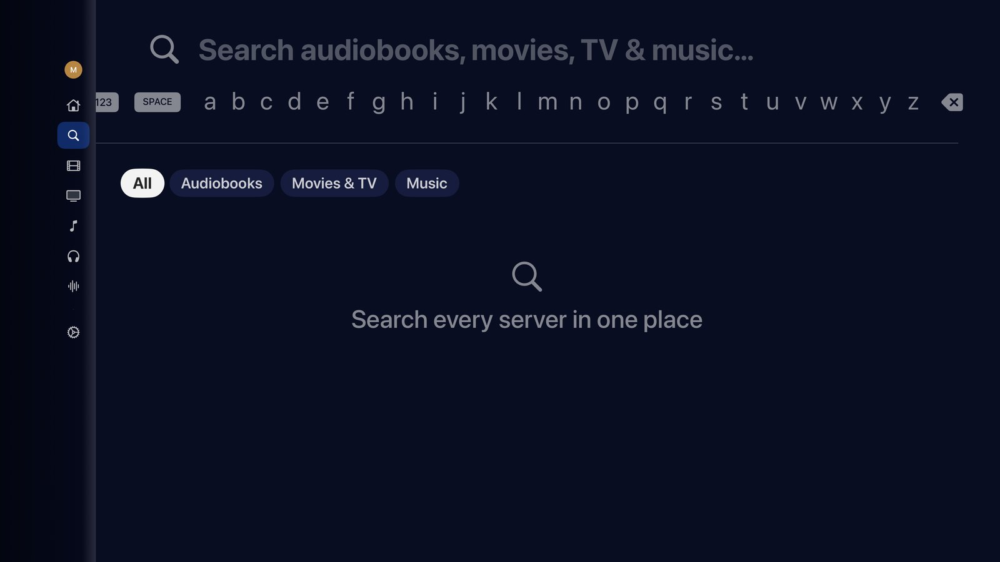
Profiles & PINs
Who's listening? Each person gets their own sign-ins, progress and Home, with an optional PIN.
Scrub previews
Swipe to scrub with picture previews, Skip Intro from the server's markers, and the stock tvOS transport.
Party Play follower
Any Apple TV joins the party your phone started and lands on the same beat as the rest of the house.
Premium on the TV
Subscribe on the Apple TV itself, or sign in with the account you already have on your phone.
Party Play
One clock. Every room.
Start a party from your phone and every Apple TV and speaker in the house plays the same thing at the same moment. The companion server keeps one shared clock; each device measures its own delay and lands on the beat.
- ⏱️Scheduled starts
Everyone starts at the same instant on the party's clock — not when the network happens to deliver the message.
- 📏Per-device sync
Each follower shows how far it is from the leader and corrects itself quietly — no hiccups, no restarts.
- 🔁Make leader
Hand the party to another device without a gap. Stop on one device and the party plays on.
- 🏠Your network only
Sync runs on your own companion server. Audio never leaves the house, and nothing goes through a cloud.
clock
Optional · self-hosted
The companion server
A small container on any box in the house. It never holds your media and never talks to the outside — it holds the things a household shares.
- People, not accounts. Profiles for everyone, each linked to their devices with a six-character code. PIN gates on the TV.
- One index of everything you own. It tells you which works sit on more than one server — and only ever reports them.
- Statistics that stay home. Listening and reading history per person, kept in one SQLite file you can back up with a button.
- The party's clock. Scheduled starts, drift read-outs and leader handover for Party Play.
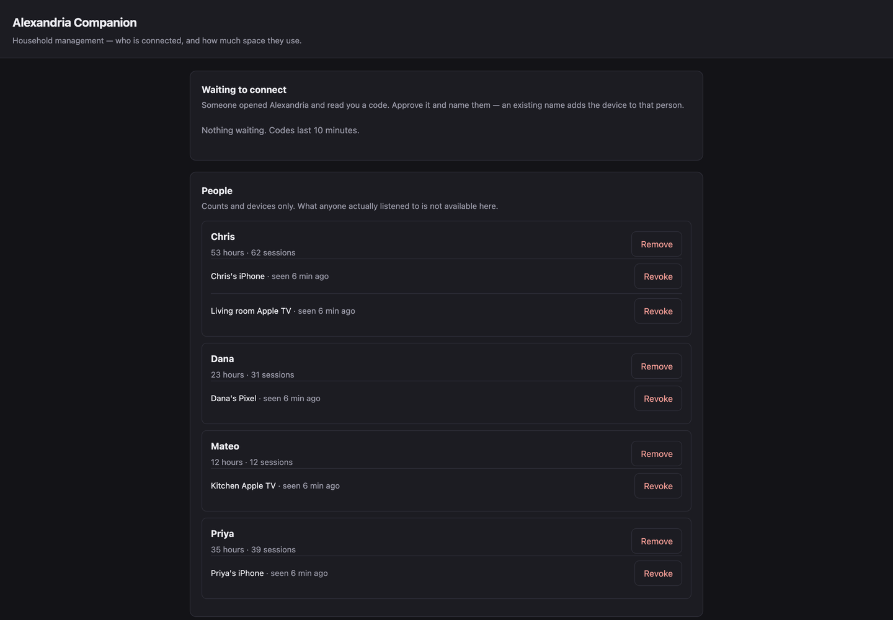
Everywhere you are
One library, seven screens.
Standard & Premium
Free with two services. Premium ties them together.
Alexandria is free with two services. Premium lifts the limit and unlocks the features that span your servers.
- Two services, swappable once a month
- Up to three server connections for each of those services
- Every kind of media those services hold — audiobooks, ebooks, comics, music and video
- Offline downloads and background playback
- All built-in readers — EPUB, PDF and comics
- Read-Along, the follow-as-you-listen teleprompter
- Queues of any length within a single service, with shuffle and reordering
- CarPlay and Android Auto
- Chromecast and AirPlay
- Statistics, goals and reading plans
- Sleep timer, synced lyrics, and search across both services
- Bug reports — always free, always read
- Every service, no limit — connect as many as you run
- Unlimited connections per service — three Plex servers and two Audiobookshelf instances, if that is your setup
- The cross-service queue: mix Plex, Jellyfin and Navidrome in one queue and play straight through
- That same mixed queue in CarPlay and Android Auto
- Radio stations that draw on every music service at once
- Party Play across the whole house
- Apple Watch and Wear OS, with all your services on your wrist
- Priority support, answered first
Premium can be bought on the phone or on the Apple TV, and one subscription covers both. Nothing you have downloaded ever stops being yours, and playback of a single service is never limited.
Screenshots
A closer look.
Tap any screen to enlarge it. Everything here is a staged library — the titles are invented, so nothing you see belongs to anyone else.

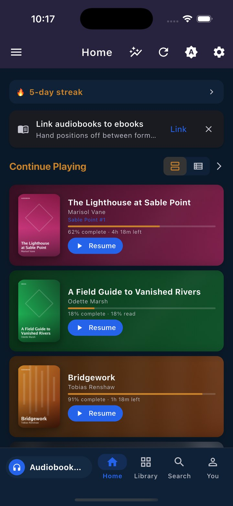
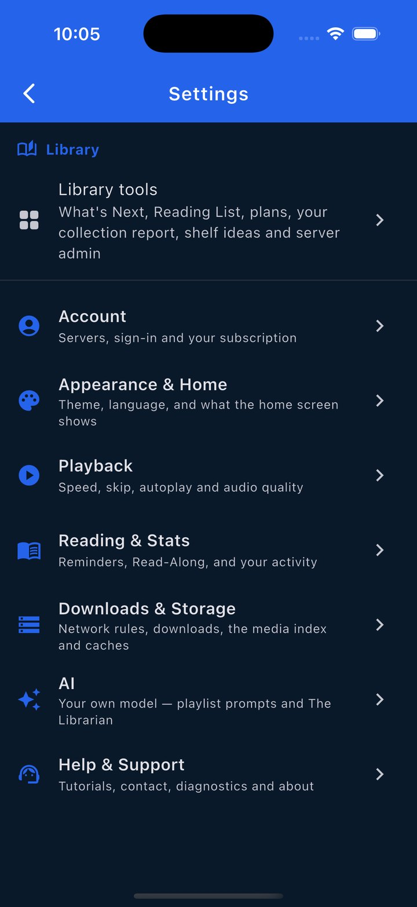
Roadmap
Where it is going.
Driven by what people ask for on Reddit and by email. Dates are never promised; order is.
In progress
Bug fixes and refinements driven by community feedback.
Offline video — take your movies and shows with you.
Bringing the offline search index to Navidrome, Stump and Custom OPDS.
Further refinement of screen-off and background playback on the watch.
Planned
Android and Wear OS as followers, and a dashboard that shows every room's drift.
Sync reading activity with BookWyrm, the federated Goodreads alternative.
Find servers on your local network automatically.
The next generation of the read-along experience.
Recently shipped
Profiles, films and TV, music, audiobooks and Party Play on the big screen.
Shared clock, scheduled starts, per-device sync and leader handover.
Artists, albums, playlists, favourites, search and offline downloads.
Any OPDS 1.2 or 2.0 catalog, and Stump with reading position synced back.
For You shelves and radio stations built entirely from your own library.
Bug reports
Found a bug?
Every report is read. Please include your device model, OS version, the Alexandria version and the steps to reproduce it.
Report a bugKnown issues
Interrupted downloads can interfere with opening the downloaded book.
Series number metadata does not display when viewing Calibre books offline.
Android: CBZ comics may only display up to 50 pages.
Recently fixed
Lazy session creation ensures progress always syncs. Manual sync now bypasses cooldown guards.
Previous sessions are closed before creating new ones. No more ghost 30-second sessions.
Tapping play on hero cards opens Now Playing immediately.
Bookmarks delete on first tap.
Quote text no longer re-renders with a different font.
Cold-launch, connection stability and playback resume all fixed in v2.0.
Feature requests
Have an idea?
Help shape what comes next — a feature, an improvement, or a server you would like to see supported.
Request a featureRequests that shipped
Navidrome, plus Gonic, Airsonic and other Subsonic-API servers.
Shipped as Custom OPDS — COPS, Ubooquity, Calibre-Web OPDS and any OPDS 1.2 or 2.0 feed.
Off the "exploring" list and onto the big screen.
Download Series — one tap queues an entire series.
Part of the complete Jellyfin music experience.
OIDC across all compatible services, not just Audiobookshelf.
Works reliably with the phone locked.
Community
Get help, share feedback, compare setups.
The subreddit is where releases are announced first and where most requests on this page started.